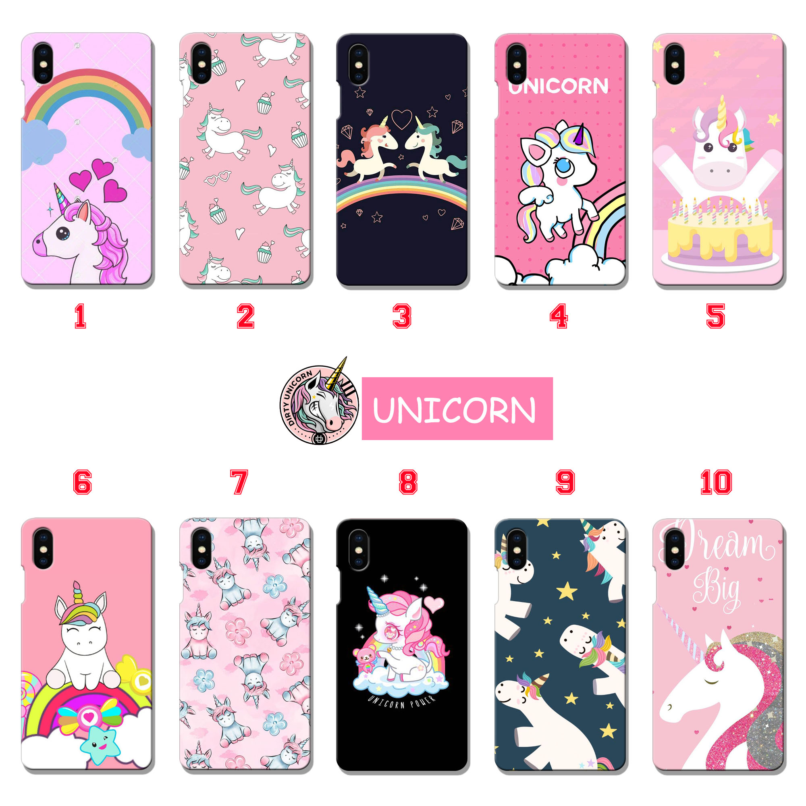

4 Produk Jualan Online Paling Laris
- Aksesoris Handphone

aksesoris HP adalah salah satu produk jualan online terlaris dalam 5 tahun terakhir. Setiap HP pasti butuh
aksesoris sendiri, dan tidak jarang satu orang memiliki lebih dari satu handphone.
Aksesoris HP yang cukup laris di antaranya adalah charger handphone, kabel USB, converter, dan earphone.
Beberapa item ini termasuk yang selalu dicari, karena mungkin mudah rusak, hilang, atau memang jenis baru.
- Dekorasi Rumah
Tren milenial dan gaya arsitektur yang kini lebih beragam membuat orang-orang mulai mencari aksesoris rumah
dengan berbagai model. Dari rumah sederhana sampai modern, tampilannya bisa disulap jadi lebih keren dengan
barang-barang estetik.
Data Google Trends menunjukkan bahwa dekorasi rumah masih cukup populer hingga saat ini. Artinya, orang-orang masih suka mencari
produk-produk dekorasi rumah untuk memperindah tempat tinggal mereka.
- Casing Handphone

Nah, casing handphone juga merupakan salah satu produk jualan online yang paling laku. Kalau diamati pun, market
casing handphone merambah ke semua kalangan. Siapa sih, yang tidak mau gadgetnya awet dan selalu terlindungi?
Berdasarkan informasi dari Google Trends, casing handphone konsisten menjadi item yang populer. Banyak brand lokal yang turut meramaikan
persaingan, seperti Cassion Store misalnya.
- Pernak-Pernik K-Pop
K-Pop telah menjadi tren yang cukup populer di Indonesia sejak pertengahan tahun 2000-an. Belakangan ini, fanbase grup
dari industri musik asal Korea Selatan ini bahkan meningkat pesat.
Beberapa brand di Indonesia turut memanfaatkan tren ini. Contohnya adalah We Are K-POP, yang menjual pernak-pernik K-Pop dalam bentuk berbagai
merchandise resmi dengan harga yang bersaing.